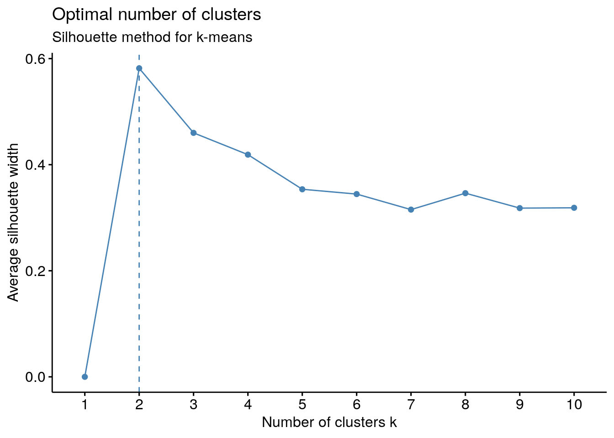

Lecture 15 Clustering
Goals
- Learn about partitional clustering
- Learn about hierarchical clustering
- Use clustering validation methods
- Apply different methods to larger data sets
library(tidyverse)
library(ggfortify)
library(factoextra)
library(NbClust)
library(fpc)
library(clustertend)15.1 K-means algorithm
- divide data into K clusters
- calculate centroids for each
- go through each data point until nothing changes
- calculate distance to each centroid
- assign to nearest centroid
- recalculate centroids for the two affected clusters
## K-means clustering with 3 clusters of sizes 53, 50, 47
##
## Cluster means:
## Sepal.Length Sepal.Width Petal.Length Petal.Width
## 1 -0.05005221 -0.88042696 0.3465767 0.2805873
## 2 -1.01119138 0.85041372 -1.3006301 -1.2507035
## 3 1.13217737 0.08812645 0.9928284 1.0141287
##
## Clustering vector:
## [1] 2 2 2 2 2 2 2 2 2 2 2 2 2 2 2 2 2 2 2 2 2 2 2 2 2 2 2 2 2 2 2 2 2 2 2 2 2
## [38] 2 2 2 2 2 2 2 2 2 2 2 2 2 3 3 3 1 1 1 3 1 1 1 1 1 1 1 1 3 1 1 1 1 3 1 1 1
## [75] 1 3 3 3 1 1 1 1 1 1 1 3 3 1 1 1 1 1 1 1 1 1 1 1 1 1 3 1 3 3 3 3 1 3 3 3 3
## [112] 3 3 1 1 3 3 3 3 1 3 1 3 1 3 3 1 3 3 3 3 3 3 1 1 3 3 3 1 3 3 3 1 3 3 3 1 3
## [149] 3 1
##
## Within cluster sum of squares by cluster:
## [1] 44.08754 47.35062 47.45019
## (between_SS / total_SS = 76.7 %)
##
## Available components:
##
## [1] "cluster" "centers" "totss" "withinss" "tot.withinss"
## [6] "betweenss" "size" "iter" "ifault"
table(iris_km$cluster, iris$Species)##
## setosa versicolor virginica
## 1 0 39 14
## 2 50 0 0
## 3 0 11 36
fviz_cluster(list(data = iris.scaled, cluster = iris_km$cluster),
ellipse.type = "norm", geom = "point", stand = FALSE, palette = "jco", ggtheme = theme_classic())15.1.1 Assumptions of K-means algorithm
- There is a meaningful distance measure
- Clusters are roughly spherical
- Clusters are of similar size
# Generate random data which will be first cluster
clust1 <- data_frame(x = rnorm(200), y = rnorm(200))
# Generate the second cluster which will ‘surround’ the first cluster
clust2 <- data_frame(r = rnorm(200, 15, .5),
theta = runif(200, 0, 2 * pi),
x = r * cos(theta), y = r * sin(theta)) %>%
dplyr::select(x, y)
#Combine the data
dataset_cir <- rbind(clust1, clust2)
#see the plot
dataset_cir %>% ggplot() + aes(x = x, y = y) + geom_point()
#Fit the k-means model
k_clust_spher1 <- kmeans(dataset_cir, centers=2)
#Plot the data and clusters
fviz_cluster(list(data = dataset_cir,
cluster = k_clust_spher1$cluster),
ellipse.type = "norm",
geom = "point", stand = FALSE,
palette = "jco",
ggtheme = theme_classic())
# Make the first cluster with 1000 random values
clust1 <- data_frame(x = rnorm(1000),
y = rnorm(1000))
# Keep 10 values together to make the second cluster
clust2 <- data_frame(x=c(5,5.1,5.2,5.3,5.4,5,5.1,5.2,5.3,5.4),
y=c(5,5,5,5,5,4.9,4.9,4.9,4.9,4.9))
#Combine the data
dataset_uneven <- rbind(clust1,clust2)
dataset_uneven %>% ggplot() + aes(x = x, y = y) + geom_point()
k_clust_spher3 <- kmeans(dataset_uneven, centers=2)
fviz_cluster(list(data = dataset_uneven,
cluster = k_clust_spher3$cluster),
ellipse.type = "norm",
geom = "point",
stand = FALSE,
palette = "jco",
ggtheme = theme_classic())15.1.2 Exercise: PCA sommelier
The file Wine.csv contains several measures made on 178 wines from Piedmont, produced using three different grapes (column Grape, with 1 = Barolo, 2 = Grignolino, 3 = Barbera). Use the 13 measured variables (i.e., all but Grape) to perform a PCA, and use k-means to cluster the data in PC space. Can you recover the right classification of grapes?
wine <- read_csv("data/Wine.csv")
# make into a matrix for PCA
mat <- wine %>% select(-Grape) %>% as.matrix()
# perform PCA by scaling and centering all 13 variables
pca <- prcomp(mat, center = TRUE, scale. = TRUE)
# pca$x contains the coordinates
# let's see how are we doing
ggplot(cbind(wine, as_tibble(pca$x))) +
aes(x = PC1, y = PC2, colour = factor(Grape)) +
geom_point()Now let’s apply k-means to divide the data into three clusters
cl <- kmeans(pca$x, centers = 3)
ggplot(wine %>% add_column(cluster = cl$cluster)) +
aes(x = Grape, y = cluster, colour = factor(Grape)) +
geom_jitter()You can see that we correctly classify all the wines for grapes 1 and 3, while some of the ones from grape 2 are misclassified.
# find convex hull for each cluster
# i.e. minimal convex polygon containing all points
hull <- pca$x %>% as_tibble() %>%
select(PC1, PC2) %>%
add_column(cluster = cl$cluster) %>%
group_by(cluster) %>%
slice(chull(PC1, PC2))
# plot the convex hulls
pl <- hull %>% ggplot(aes(x = PC1, y = PC2, group = cluster, fill = factor(cluster))) + geom_polygon(alpha = 0.5)
show(pl)
# now add the points
pl + geom_point(data = pca$x %>% as_tibble() %>%
select(PC1, PC2) %>%
add_column(Grape = wine$Grape, cluster = cl$cluster),
aes(x = PC1, y = PC2, colour = factor(Grape), shape = factor(Grape)))
table(cl$cluster, wine$Grape)##
## 1 2 3
## 1 59 3 0
## 2 0 3 48
## 3 0 65 0You can see that we are misclassifying the grapes that are at the border of the cluster or nestled among the points belonging to a different grape. But the outcome is quite good: we would have misclassified only 6 wines out of 178 (3.3%).
15.2 Hierarchical clustering
15.2.1 Agglomerative clustering
Start with single data points as “clusters,” then iteratively combine the closest pair of clusters. The closeness may be defined in the following ways:
Single Linkage: In single linkage, we define the distance between two clusters as the minimum distance between any single data point in the first cluster and any single data point in the second cluster.
Complete Linkage: In complete linkage, we define the distance between two clusters to be the maximum distance between any single data point in the first cluster and any single data point in the second cluster.
Average Linkage: In average linkage, we define the distance between two clusters to be the average distance between data points in the first cluster and data points in the second cluster.
Centroid Method: In centroid method, the distance between two clusters is the distance between the two mean vectors of the clusters.
Ward’s Method: This method does not directly define a measure of distance between two points or clusters. It is an ANOVA based approach. One-way univariate ANOVAs are done for each variable with groups defined by the clusters at that stage of the process. At each stage, two clusters merge that provide the smallest increase in the combined error sum of squares.
# Use hcut() which compute hclust and cut the tree
cir_hc <- hcut(dataset_cir, k = 2, hc_method = "single")
# Visualize dendrogram
fviz_dend(cir_hc, show_labels = FALSE, rect = TRUE)
# Visualize cluster
fviz_cluster(cir_hc, ellipse.type = "convex")
# Use hcut() which compute hclust and cut the tree
uneven_hc <- hcut(dataset_uneven, k = 2, hc_method = "single")
# Visualize dendrogram
#fviz_dend(uneven_hc, show_labels = FALSE, rect = TRUE)
# Visualize cluster
fviz_cluster(uneven_hc, ellipse.type = "convex")
15.2.2 Cluster the irises using hierarchical methods
Try different methods and see which one generates the best results
# Hierarchical clustering
# ++++++++++++++++++++++++
# Use hcut() which compute hclust and cut the tree
iris_hc <- hcut(iris.scaled, k = 3, hc_method = "single")
# Visualize dendrogram
fviz_dend(iris_hc, show_labels = FALSE, rect = TRUE)
# Visualize cluster
fviz_cluster(iris_hc)
table(iris_hc$cluster, iris$Species)##
## setosa versicolor virginica
## 1 49 0 0
## 2 1 0 0
## 3 0 50 5015.3 Clustering analysis and validation
15.3.1 Hopkins statistic
Comparing the mean nearest-neighbor distance between uniformly generated sample points and mean nearest-neighbor distance within the data set. \[ H = 1 - \frac{\sum u^d_i}{\sum u^d_i + \sum w^d_i} \] This quantifies the “clustering tendency” of the data set.
# Check Cluster Tendency--Hopkins Statistic
hopkins(iris.scaled, n = 30) # n should be about 20% of the data## $H
## [1] 0.1794449
# run a couple times to sample repeatedlyIf H is below 0.5 reject the null hypothesis, which is that the data are generated by a Poisson point process (uniformly distributed.)
# Visual Assessment of Cluster Tendency
fviz_dist(dist(iris.scaled), show_labels = FALSE)+ labs(title = "Iris Data")15.3.2 Elbow method
# Elbow method
fviz_nbclust(iris.scaled, kmeans, method = "wss") + geom_vline(xintercept = 2, linetype = 2)+
labs(subtitle = "Elbow method for K-means") ### Silhouette Plot Measures how similar an object \(i\) is to the other objects in its same cluster versus the objects outside of its cluster; \(S_i\) values range from -1 to 1. Close to 1 means very similar to objects in its own group and dissimilar to others
# Silhouette method
fviz_nbclust(iris.scaled, kmeans, method = "silhouette")+ labs(subtitle = "Silhouette method for k-means")15.3.3 Lazy way: use all the methods!
nb <- NbClust(iris.scaled, distance = "euclidean", min.nc = 2,
max.nc = 10, method = "kmeans")## *** : The Hubert index is a graphical method of determining the number of clusters.
## In the plot of Hubert index, we seek a significant knee that corresponds to a
## significant increase of the value of the measure i.e the significant peak in Hubert
## index second differences plot.
## ## *** : The D index is a graphical method of determining the number of clusters.
## In the plot of D index, we seek a significant knee (the significant peak in Dindex
## second differences plot) that corresponds to a significant increase of the value of
## the measure.
##
## *******************************************************************
## * Among all indices:
## * 11 proposed 2 as the best number of clusters
## * 10 proposed 3 as the best number of clusters
## * 1 proposed 4 as the best number of clusters
## * 1 proposed 6 as the best number of clusters
## * 1 proposed 10 as the best number of clusters
##
## ***** Conclusion *****
##
## * According to the majority rule, the best number of clusters is 2
##
##
## *******************************************************************
fviz_nbclust(nb)## Among all indices:
## ===================
## * 2 proposed 0 as the best number of clusters
## * 11 proposed 2 as the best number of clusters
## * 10 proposed 3 as the best number of clusters
## * 1 proposed 4 as the best number of clusters
## * 1 proposed 6 as the best number of clusters
## * 1 proposed 10 as the best number of clusters
##
## Conclusion
## =========================
## * According to the majority rule, the best number of clusters is 2 .15.3.4 Validation
One common approach to validating clustering is to use the approach called bootstrapping which involves repeatedly sampling from the data set, running the clustering algorithm and comparing the results. One algorithm uses the Jaccard coefficient to quantify similarity between sets, which is defined as the number of points in the intersection of the two sets (those which are in both sets), divided by the number of points in the union of the two sets (the point that are in either one or the other set):
\[ J = \frac{ \vert A \cap B \vert }{\vert A \cup B \vert} \] The vertical lines indicate the number of points (cardinality) in the set.
k <- 3
cboot.hclust <- clusterboot(iris.scaled, clustermethod=kmeansCBI, k= k)## boot 1
## boot 2
## boot 3
## boot 4
## boot 5
## boot 6
## boot 7
## boot 8
## boot 9
## boot 10
## boot 11
## boot 12
## boot 13
## boot 14
## boot 15
## boot 16
## boot 17
## boot 18
## boot 19
## boot 20
## boot 21
## boot 22
## boot 23
## boot 24
## boot 25
## boot 26
## boot 27
## boot 28
## boot 29
## boot 30
## boot 31
## boot 32
## boot 33
## boot 34
## boot 35
## boot 36
## boot 37
## boot 38
## boot 39
## boot 40
## boot 41
## boot 42
## boot 43
## boot 44
## boot 45
## boot 46
## boot 47
## boot 48
## boot 49
## boot 50
## boot 51
## boot 52
## boot 53
## boot 54
## boot 55
## boot 56
## boot 57
## boot 58
## boot 59
## boot 60
## boot 61
## boot 62
## boot 63
## boot 64
## boot 65
## boot 66
## boot 67
## boot 68
## boot 69
## boot 70
## boot 71
## boot 72
## boot 73
## boot 74
## boot 75
## boot 76
## boot 77
## boot 78
## boot 79
## boot 80
## boot 81
## boot 82
## boot 83
## boot 84
## boot 85
## boot 86
## boot 87
## boot 88
## boot 89
## boot 90
## boot 91
## boot 92
## boot 93
## boot 94
## boot 95
## boot 96
## boot 97
## boot 98
## boot 99
## boot 100
print(cboot.hclust)## * Cluster stability assessment *
## Cluster method: kmeans
## Full clustering results are given as parameter result
## of the clusterboot object, which also provides further statistics
## of the resampling results.
## Number of resampling runs: 100
##
## Number of clusters found in data: 3
##
## Clusterwise Jaccard bootstrap (omitting multiple points) mean:
## [1] 0.9328980 0.8346651 0.8318038
## dissolved:
## [1] 1 5 12
## recovered:
## [1] 83 75 79
#cboot.hclust <- clusterboot(bcdata, clustermethod=hclustCBI,
# method="single", k=2)15.4 Application to breast cancer data
# Import Breast Cancer Data Set
fulldata <- read_csv("data/Wisconsin_Breast_Cancers.csv")
bcdata <- fulldata[,2:10]
class <- array(data= fulldata[,11])
head(fulldata)## # A tibble: 6 x 11
## Sample Clump_Thickness Size_Uniformity Shape_Uniformity Marginal_Adhesion
## <dbl> <dbl> <dbl> <dbl> <dbl>
## 1 1000025 5 1 1 1
## 2 1002945 5 4 4 5
## 3 1015425 3 1 1 1
## 4 1016277 6 8 8 1
## 5 1017023 4 1 1 3
## 6 1017122 8 10 10 8
## # … with 6 more variables: Single_Epithelial_Cell_Size <dbl>,
## # Bare_Nuclei <dbl>, Bland_Chromatin <dbl>, Normal_Nucleoli <dbl>,
## # Mitoses <dbl>, Class <dbl>
# Visually Inspect Data (PCA)
fviz_pca_ind(prcomp(bcdata), title = "PCA - Breast Cancer data", geom = "point", ggtheme = theme_classic())## K-means clustering with 2 clusters of sizes 453, 231
##
## Cluster means:
## Clump_Thickness Size_Uniformity Shape_Uniformity Marginal_Adhesion
## 1 -0.4973081 -0.6104358 -0.6062297 -0.5191788
## 2 0.9752406 1.1970884 1.1888401 1.0181299
## Single_Epithelial_Cell_Size Bare_Nuclei Bland_Chromatin Normal_Nucleoli
## 1 -0.5133379 -0.5896356 -0.5498977 -0.531641
## 2 1.0066757 1.1562984 1.0783707 1.042569
## Mitoses
## 1 -0.3070638
## 2 0.6021640
##
## Clustering vector:
## [1] 1 2 1 2 1 2 1 1 1 1 1 1 1 1 2 2 1 1 2 1 2 2 1 1 1 1 1 1 1 1 1 2 1 1 1 2 1
## [38] 2 2 2 2 2 2 1 2 1 1 2 2 1 2 2 2 2 2 1 1 1 2 1 2 1 1 2 1 2 2 1 1 2 1 2 2 1
## [75] 1 1 1 1 1 1 1 1 2 2 2 2 1 1 1 1 1 1 1 1 1 1 2 2 2 1 1 1 2 2 2 2 1 2 1 2 2
## [112] 2 1 1 1 2 1 1 1 1 2 2 2 1 2 1 2 1 1 1 2 1 1 1 1 1 1 1 1 2 1 1 1 1 1 2 1 2
## [149] 2 1 1 2 1 1 2 2 1 1 1 1 2 2 1 1 1 1 1 2 2 2 1 2 1 1 1 1 1 2 2 1 2 2 2 1 2
## [186] 2 1 1 1 1 2 1 1 1 2 2 1 1 1 2 2 1 1 1 2 2 1 2 2 2 1 1 2 1 1 2 1 2 2 1 2 2
## [223] 1 2 2 2 1 2 1 2 2 2 2 1 1 1 1 1 1 2 1 1 1 2 2 2 2 2 1 1 1 2 2 2 2 2 2 1 2
## [260] 2 2 1 2 1 2 1 1 1 1 1 2 1 1 2 2 2 2 2 1 2 2 1 1 2 2 2 1 2 2 1 2 1 2 2 1 1
## [297] 2 1 1 1 2 1 1 2 2 1 2 2 1 2 1 1 1 1 2 2 2 1 1 2 2 1 2 1 1 2 2 1 1 1 2 1 1
## [334] 1 1 2 1 1 2 2 1 1 1 2 2 2 2 2 1 1 1 1 2 2 1 1 1 1 1 1 1 1 1 1 1 1 1 2 1 1
## [371] 1 1 2 1 1 1 1 2 1 1 1 1 1 1 1 1 2 1 1 1 1 1 1 1 1 1 1 2 1 2 1 2 1 1 1 1 2
## [408] 1 1 1 2 1 2 1 1 1 1 1 1 2 2 2 1 1 1 2 1 1 1 1 1 1 1 1 2 1 1 1 2 1 1 2 2 1
## [445] 1 1 1 1 1 1 2 2 2 1 1 1 1 1 1 1 1 1 1 1 2 1 1 2 2 1 1 1 2 2 1 1 2 1 2 1 1
## [482] 1 1 1 1 1 1 1 1 1 1 2 1 1 1 1 1 1 1 2 2 1 1 1 2 1 1 2 2 1 1 1 1 1 1 2 1 1
## [519] 1 1 1 1 1 1 1 1 1 1 1 1 1 2 1 1 2 1 1 1 1 1 1 1 1 1 1 1 1 1 1 1 2 1 1 2 2
## [556] 2 2 1 1 2 1 1 1 1 1 1 2 2 1 1 1 2 1 2 1 2 2 2 1 2 1 1 1 1 1 1 1 1 2 2 2 1
## [593] 1 2 1 2 2 2 1 1 1 1 1 1 1 1 1 1 1 1 2 1 1 1 1 1 1 2 1 1 2 1 1 1 1 1 1 1 1
## [630] 1 1 1 2 1 1 1 1 1 1 1 1 2 2 1 1 1 1 1 1 1 1 1 2 2 2 1 1 1 1 1 1 1 1 1 2 2
## [667] 1 1 1 1 1 1 1 1 1 2 1 1 1 1 2 2 2 2
##
## Within cluster sum of squares by cluster:
## [1] 573.108 2156.785
## (between_SS / total_SS = 55.6 %)
##
## Available components:
##
## [1] "cluster" "centers" "totss" "withinss" "tot.withinss"
## [6] "betweenss" "size" "iter" "ifault"
table(bc_km$cluster, fulldata$Class)##
## 2 4
## 1 434 19
## 2 10 221
#irisCluster$cluster <- as.factor(irisCluster$cluster)
#ggplot(iris, aes(Petal.Length, Petal.Width, color = iris$cluster)) + geom_point()
fviz_cluster(list(data = bcdata, cluster = bc_km$cluster),
ellipse.type = "norm", geom = "point", stand = FALSE, palette = "jco", ggtheme = theme_classic())
# Use hcut() which compute hclust and cut the tree
bc_hc <- hcut(scale(bcdata), k = 2, hc_method = "ward")
# Visualize dendrogram
fviz_dend(bc_hc, show_labels = FALSE, rect = TRUE)
# Visualize cluster
fviz_cluster(bc_hc, ellipse.type = "convex")
table(bc_hc$cluster, fulldata$Class)##
## 2 4
## 1 412 2
## 2 32 238